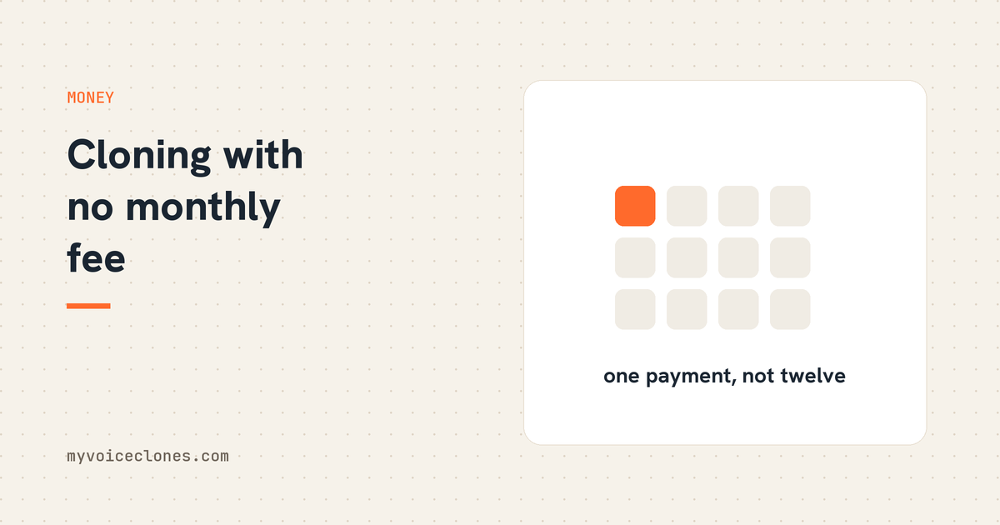

Most voice cloning services charge $5 to $30 monthly because their processing runs on cloud servers. Tools that run on your own PC, like VoiceClone, can charge once, $49, because your computer does the work. You keep the tool, your voice, and all your audio forever.
I cancel subscriptions the way some people do spring cleaning, once a month, with mild guilt. And the one that finally pushed me to build my own tool was a voice subscription, because the thing I was renting was my own voice. I had recorded it, I owned the recordings, and still a company charged me every month for the right to hear myself say new sentences. Miss a payment and my voice goes silent. That is a strange sentence to write, and it was a stranger thing to live with.
Why every voice tool wants a monthly fee
To be fair to the cloud services, their pricing is not evil, it is structural. When your clone runs on their servers, every sentence you generate costs them real compute money, so they meter you with credits and monthly plans because they genuinely have bills that scale with your usage. The subscription is not a business trick. It is the shape of the architecture.
But that means the fix is also structural. Move the processing from their computers to yours, and the ongoing cost disappears. Your PC does the work, your electricity bill absorbs the pennies, and the software can be priced like software used to be priced: once.
That is the entire idea behind VoiceClone. It runs on your Windows PC, the engine inside is an open source model, and there is no server anywhere in the story, which is why the license is $49 one time instead of $49 a quarter.
What the math looks like over a year
The popular cloud tools mostly sit between $5 and $30 a month depending on how many minutes of audio you need. As I write this, the mid plans people actually end up on, because the cheap plans run out of credits fast, cost around $20 a month. Reasonable per month. Over a year that is a couple hundred dollars, and over three years you have paid five or six times over for something that still is not yours, because the day you stop paying, everything stops.
There is a quieter cost too that took me longer to see. With metered credits, every generation has a tiny price tag in your head, so you hesitate. You accept the take that is almost right instead of regenerating, because regenerating costs credits. When the tool is on your own machine, a retry costs nothing, so you retry until it is actually right. My published audio got better when the meter disappeared, and I do not think that is a coincidence.
What pay once gets you, concretely
With the one time license, the whole app opens and stays open:
- Unlimited generations. The free version gives you one full voice training and 3 generations, enough to judge the voice honestly. The license removes the cap entirely, generate all day and paste a full video script.
- The word checker. Every generation is made in several takes, a speech recognizer listens to each one, and the best take wins with every word graded. This runs locally, so checking five takes costs you nothing extra, which is exactly the kind of feature a credit metered service cannot afford to give you.
- The editor. A wrong word gets fixed in place, regenerated alone or replaced with your own recorded pronunciation, without touching the rest of the clip.
- Local training. One button trains a real copy of your voice on your own graphics card in under an hour. Cloud services charge ongoing fees for their version of this. Here it is included, because the compute is yours.
- Exports. WAV, MP3, SRT and VTT subtitles timed from the actual spoken words, and transcripts.
One key works on 2 of your computers, and there is a 30 day refund with no questions, because I would honestly rather refund you than have you own a tool you do not use.
The honest trade offs
Pay once tools are not automatically better at everything, and I want to be straight about where the cloud wins. Cloud services run enormous models on serious hardware, they cover dozens of languages, and they work from any device including your phone. VoiceClone is English only, Windows first, and its speed depends on your hardware, an NVIDIA card makes it quick, a plain office laptop works but makes you wait. If you need Japanese narration from a phone, a subscription service is the right tool and I will not pretend otherwise.
But if what you actually do is generate English voiceovers from a computer you already own, which describes most creators I know, then the subscription is buying you convenience you are not using, month after month.
FAQ
Is there a voice cloning tool with no subscription?
Yes. VoiceClone is a one time purchase, $49, because it runs entirely on your own PC instead of cloud servers. There are also free open source engines if you are comfortable setting up Python environments yourself.
Why do most AI voice tools charge monthly?
Because their processing runs on their servers, and server compute costs them money every time you generate audio. Metered plans cover that cost. Tools that run on your own computer do not have that cost, so they can charge once.
What happens to my cloned voice if I cancel a cloud subscription?
On most services your voice model and generation access stop when payments stop, and your voice data stays on their servers under their retention policy. With a local tool, the voice model is a file in your own folder and keeps working forever.
Is a one time payment voice cloner worse quality than subscription ones?
Not automatically. Quality depends on the model and your recording, not the billing. The honest difference: big cloud models cover more languages and need no hardware from you, while a local tool like VoiceClone matches or beats them for English once trained on your voice, and costs nothing after purchase.
Check one number tonight
Open your bank statement and add up what the last twelve months of AI subscriptions cost you, because mine embarrassed me. If the voice line alone is past $49, you already know what to do: try the free version first, make sure your clone sounds like you, and then buy your voice back once.
Hear your own voice come back.
The free Windows app clones and fully trains one voice, yours, on your own PC. No account, no upload, and the download starts right away.